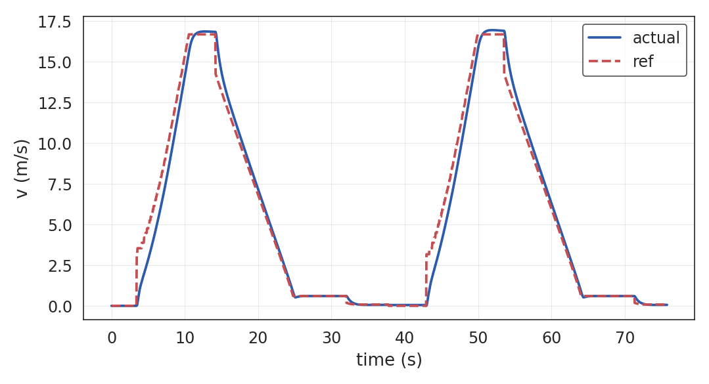
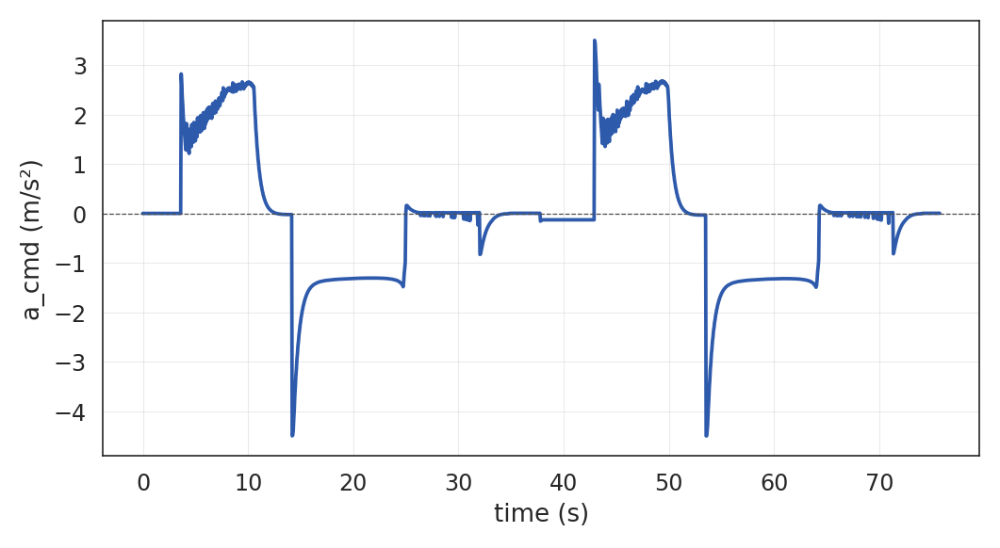
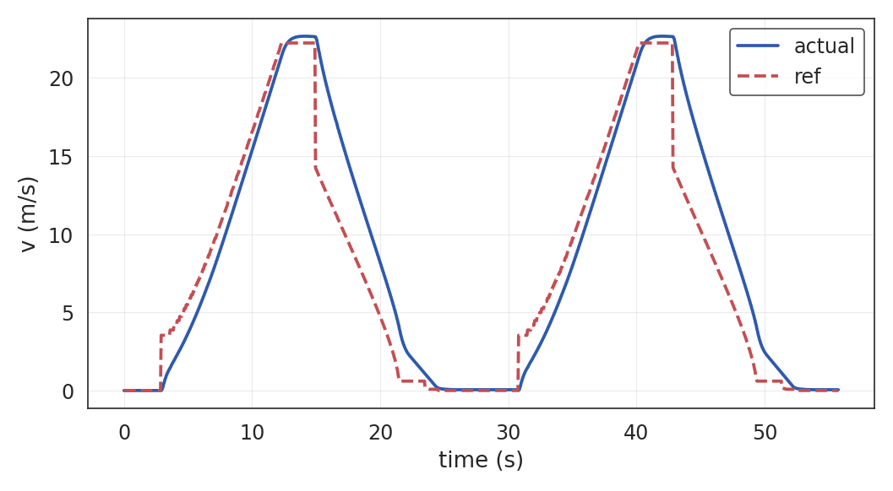
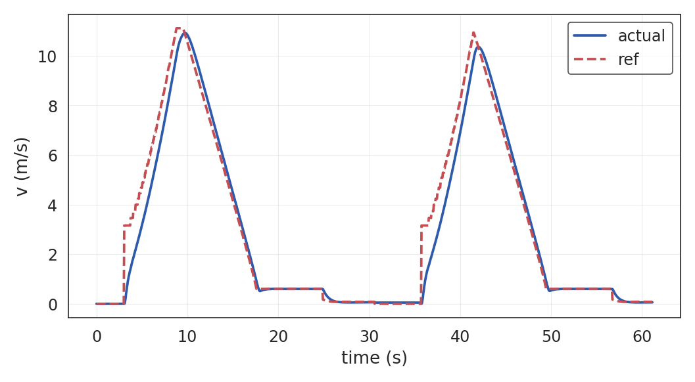
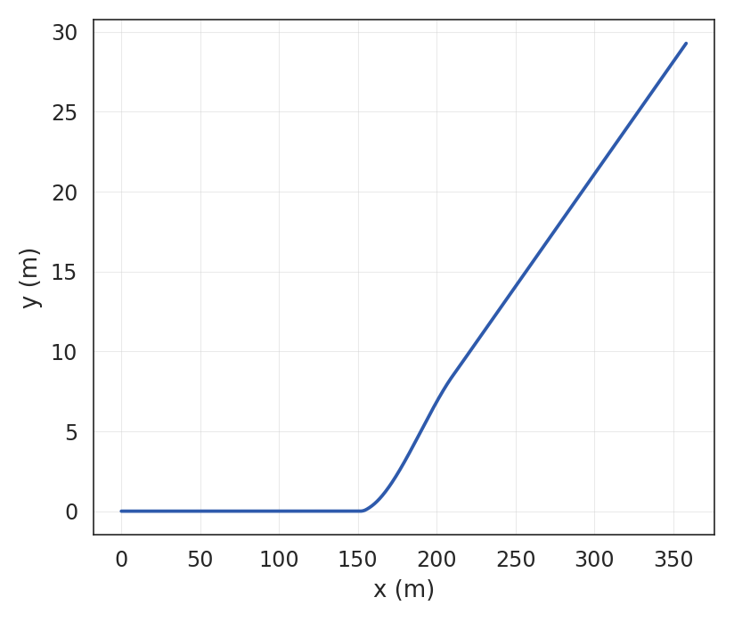
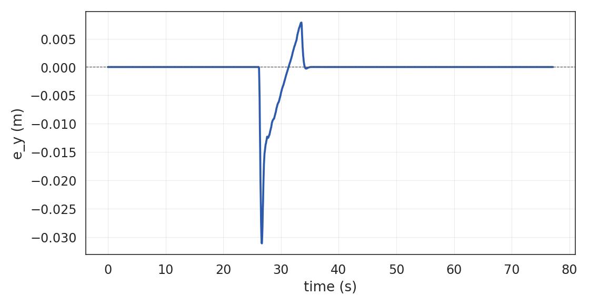
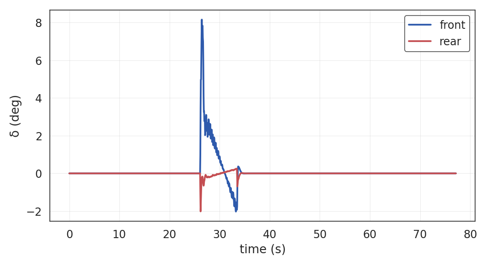
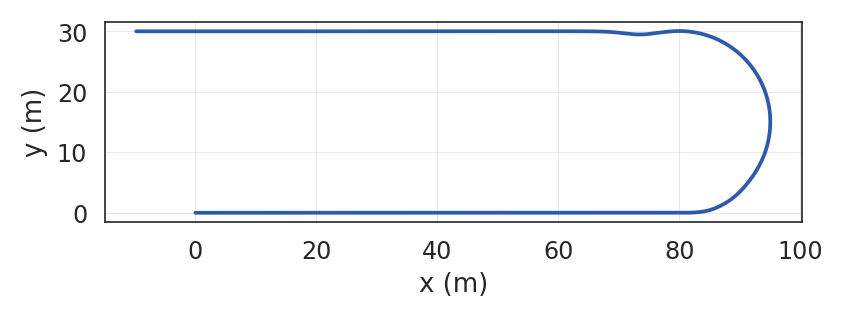
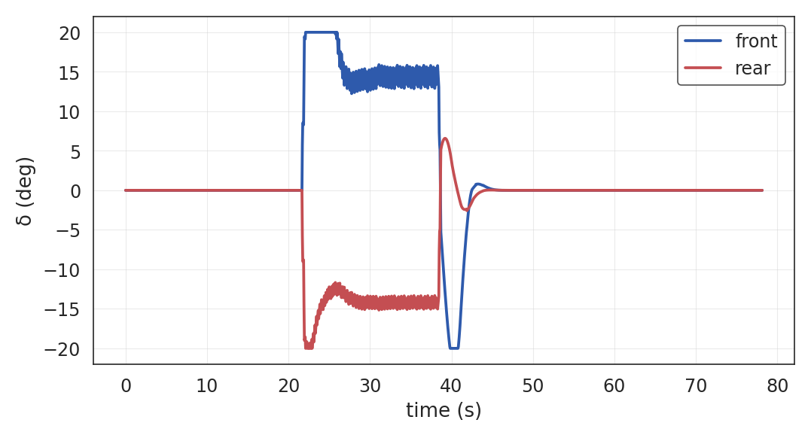
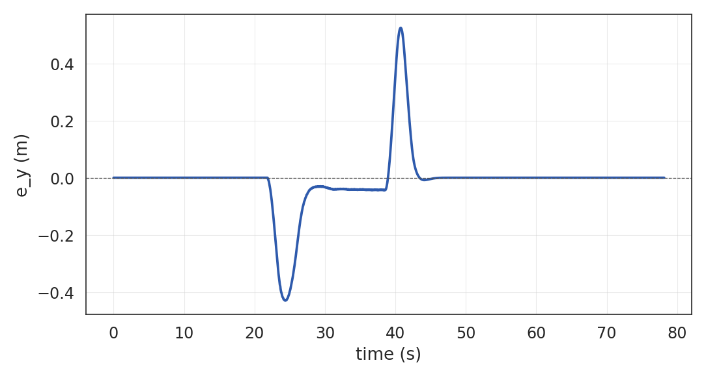

多场景路径跟踪与精准停车能力验证
测试平台：ROS Noetic + 6状态耦合动力学仿真
控制器：PI+LQR（直线/道岔） | MPC（大曲率掉头）
报告生成时间：2026-06-02
| 场景 ID | 描述 | 最高速度 | 控制器 | 关键挑战 |
|---|---|---|---|---|
| standard_stop | 标准站台停靠 | 60 km/h | PI+LQR | 舒适减速 + 精准停车 |
| highspeed_stop | 高速站台停靠 | 80 km/h | PI+LQR | 紧急制动能力 |
| short_platform | 短站台停靠 | 40 km/h | PI+LQR | 紧凑站台 20m |
| switch_lane | 道岔换道 8° | 30 km/h | PI+LQR | 横向跟踪 + 轮协同 |
| uturn_180 | 180° 掉头 R=15m | 8 m/s | MPC | 大曲率 + 姿态恢复 |


| 时长 | 距离 | 速度 RMSE | 横向 Max | 航向 Max | 最大减速度 |
|---|---|---|---|---|---|
| 75.7 s | 402.0 m | 0.850 m/s | 0.000 m | 0.00° | — |
典型“梯形”速度包络：加速 → 巡航 → 舒适制动 → 精准停车 → 重新加速

时长 55.7s | 距离 482.2m | 速度 RMSE 2.72 m/s
最大减速度 -4.50 m/s² — 验证紧急制动能力

时长 61.1s | 距离 173.3m | 速度 RMSE 0.73 m/s
紧凑站台 20m，低速精准停车



| 时长 | 距离 | 横向 RMSE | 横向 Max | 航向 Max | 前轮转角 Max |
|---|---|---|---|---|---|
| 77.1 s | 360.5 m | 0.003 m | 0.031 m | 1.17° | 8.1° |
三次多项式过渡曲线，横向误差峰值仅 3.1 cm，前后轮协同良好



| 时长 | 距离 | 横向 RMSE | 横向 Max | 航向 Max | 前轮转角 Max |
|---|---|---|---|---|---|
| 78.1 s | 217.3 m | 0.107 m | 0.524 m | 7.38° | 20.0° |
入弯/出弯处曲率阶跃导致航向误差峰值 7.4°；前后轮转角均触及 20° 限幅
| 场景 | 时长(s) | 距离(m) | 均速(m/s) | 横向 RMSE(m) | 横向 Max(m) | 航向 Max(°) | 速度 RMSE(m/s) |
|---|---|---|---|---|---|---|---|
| 标准站点停靠 | 75.7 | 402.0 | 5.31 | 0.000 | 0.000 | 0.00 | 0.850 |
| 高速站点停靠 | 55.7 | 482.2 | 8.65 | 0.000 | 0.000 | 0.00 | 2.720 |
| 短站台停靠 | 61.1 | 173.3 | 2.83 | 0.000 | 0.000 | 0.00 | 0.732 |
| 道岔换道 | 77.1 | 360.5 | 4.67 | 0.003 | 0.031 | 1.17 | 1.211 |
| 180° 掉头 | 78.1 | 217.3 | 2.78 | 0.107 | 0.524 | 7.38 | 1.382 |
直线场景横向/航向误差几乎为零；大曲率场景横向误差在 0.1 m 量级，满足有轨电车运行要求
Questions & Discussion
完整数据与图表：
/home/cyun/Documents/project/tram_ws/src/tram_bringup/experiments/report/